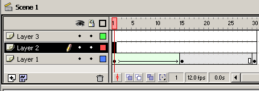
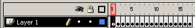
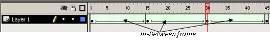

4. Dasar Animasi
Animasi merupakan satu fungsi utama dari Flash. Animasi, dan cara pembuatannya tidak sesederhana menggerakkan sesuatu dari titik A ke titik B. Ada banyak faktor yang harus dipertimbangkan untuk membuat animasi yang efektif dan efisien.
Animasi pada awalnya berupa kumpulan atau potongan gambar yang ditampilkan bergantian secara cepat. Karena keterbatasan mata kita, kita tidak bisa membedakan setiap gambar yang satu dengan yang lainya dan yang tampak dalam mata kita adalah sebuah gerakan yang disebut animasi.
Dalam film, setiap bagian gambar itu disebut frame. Frame frame tersebut berganti dengan kecepatan tertentu sehingga tidak nampak oleh mata manusia. Kecepatan banyaknya frame yang ditampilkan dihitung dalam satuan frame per detik(fps = frame per second). Film yang kita saksikan di bioskop menampilkan 24 frame per detik. Videotape dan televisi menampilkan 30 frame per detik. Semakin tinggi kecepatan dari frame maka gambar yang dihasilkan akan semakin halus tetapi kerugiannya adalah memerlukan jumlah frame yang lebih banyak dengan waktu yang sama.
Didalam flash frame-frame dari animasi diletakkan dalam bagian Timeline. Ditempat tersebut kita dapat mengatur frame yang digunakan untuk animasi. didalam Timeline terdapat Timeline header yaitu bagian yang terdapat angka 1, 5, 10, dst itu berguna untuk menunjukkan letak frame. Jadi jika kita membuat sebuah animasi maka gerakan dari gambar akan dimulai dari frame ke satu, dilanjutkan kedua dan seterusnya hingga animasi berakhir.

Playhead yang selanjutnya kita sebut sebagai penunjuk frame yaitu garis vertikal berwarna merah berguna untuk menunjukkan posisi dari frame yang ditampilkan pada stage. Playhead dapat dipindah ke frame yang kita inginkan cukup dengan mengklik frame tersebut.
Di dalam flash ada dua cara membuat animasi, yaitu animasi frame by frame dan animasi tweening. Pada animasi frame by frame, disetiap frame diberikan keyframe dan dilakukan perubahan terhadap obyek yang ada pada stage. Kerugian dalam pembuatan animasi frame by frame adalah kita harus mengisikan gambar satu persatu pada tiap tiap frame sehingga membutuhkan waktu yang lama.

KeyFrame adalah frame yang berperan sebagai titik referensi, yang biasanya menggambarkan momen waktu utama. Sebagai contoh jika ingin membuat animasi lari jarak pendek 100 meter, maka kita bisa memiliki Key frame berikut :
Key frame 1 : pelari berdiri
Key frame 2 : pelari menempatkan posisi kakinya
Key frame 3 : pelari mengambil posisi siap
Key frame 4 : pelari melewati garis start
Pada animasi tweening prinsip dasarnya adalah sebagai berikut :
- Tentukan frame awal untuk animasi, berikan keyframe pada frame awal ini
- Tentukan frame akhir untuk animasi, berikan keyframe pada frame akhir
- Lakukan perubahan terhadap obyek di frame akhir (posisi, ukuran, bentuk ataupun warna)
- Berikan tweening diantara frame awal dan akhir
